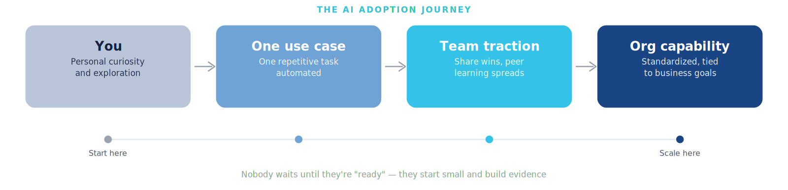
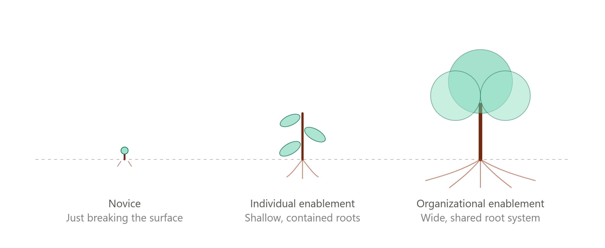
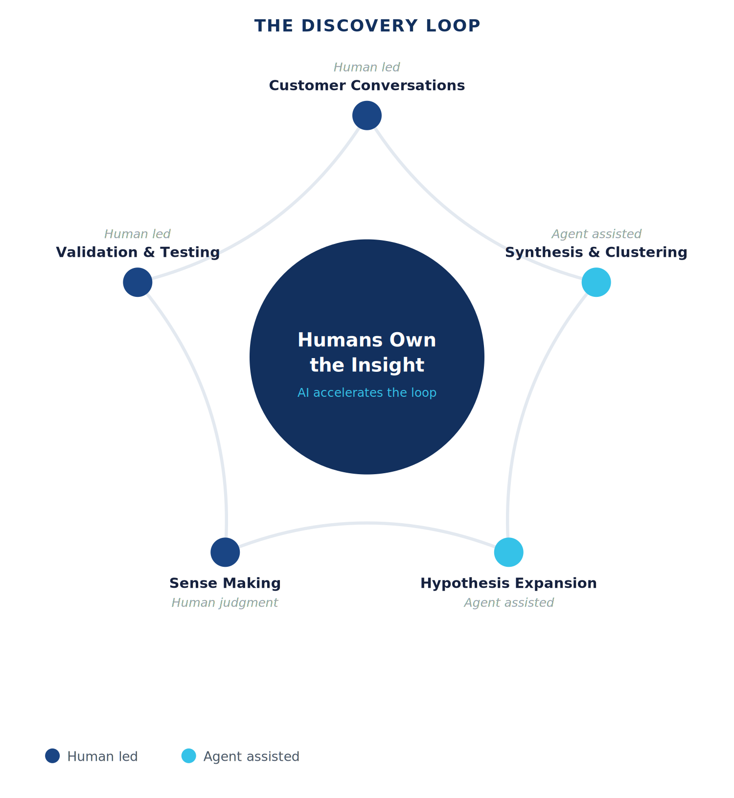
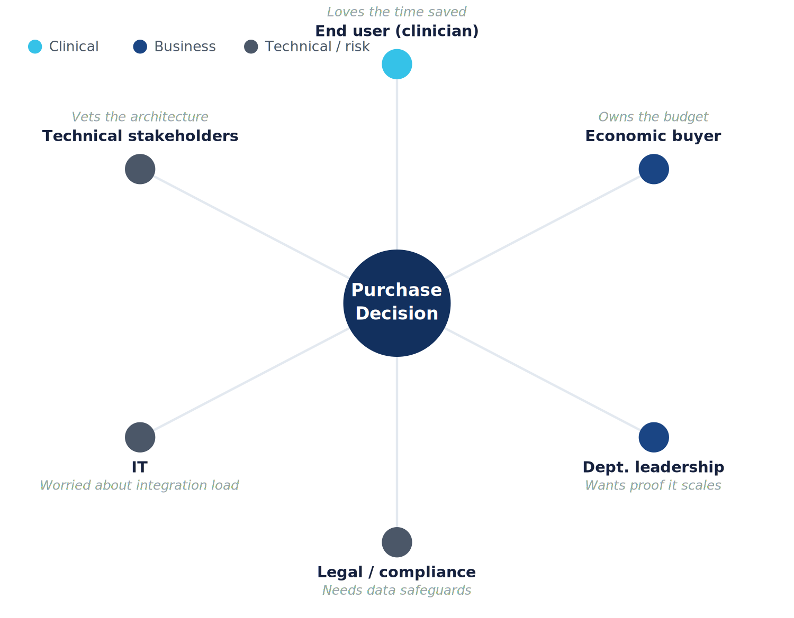

Newsletter
Product+
Practical notes on product leadership, healthcare and putting AI to work, on LinkedIn.
I write the Product+ newsletter, and I've turned how I assess and coach product managers into an open framework, an interactive assessment and a learning platform.
Practical notes on product leadership, healthcare and putting AI to work, on LinkedIn.
On AI agents, AI enablement, product strategy and pricing, published on LinkedIn.
Why AI enablement has to be built for the whole organization, not only its most enthusiastic individuals, if it's going to last.
↗Why shipping more isn't helping your users, and what to do instead.
↗What Apple's pricing teaches product managers about the art of the upsell.
↗Costco sells memberships, not groceries, and what that teaches product managers about where the money really is.
This is how the Product Advisory assessment places product managers. There are five core product skills plus AI fluency, for the individual and the organization, and each runs from novice to advanced.
Understanding real user needs, market dynamics and whether the problem is real before committing resources to build. It keeps a product grounded in reality rather than assumptions.
Turning market understanding and business goals into a clear product direction, with a roadmap that ties today's work to that direction rather than listing features.
Deciding what to work on next, and what not to, with limited time and resources, in a way that holds up under real pressure.
Turning decisions into shipped, working product reliably, from the idea through launch and the iteration that follows.
Building real alignment and trust across the people, teams and functions a product touches, especially the ones that don't report to you.
Using AI personally to remove friction, with good judgment about when to trust its output. Then bringing AI capability into an organization in a way that's governed and lasts beyond one enthusiast.
Diagrams from the Product Advisory learning platform.

Start with personal curiosity, automate one repetitive task, let team wins spread from peer to peer, then standardize and tie it to business goals.

Individual AI skill has shallow, contained roots. Organizational enablement grows a wide, shared root system that outlasts any one person.

Humans own the insight; AI speeds up the loop. Agents help with synthesis and expanding hypotheses, while conversations, sense-making and validation stay human-led.

The clinician loves the time saved, the economic buyer owns the budget, department leaders want proof it scales, IT worries about integration load, and legal needs data safeguards. Each one needs a different case.